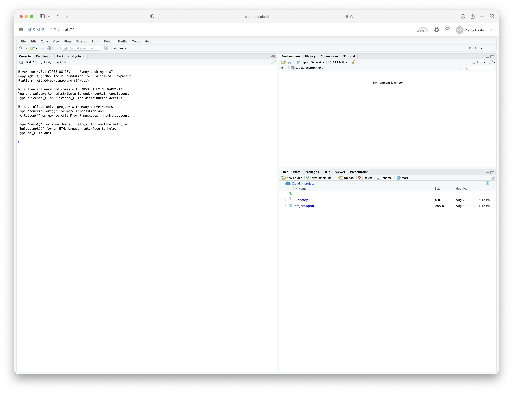
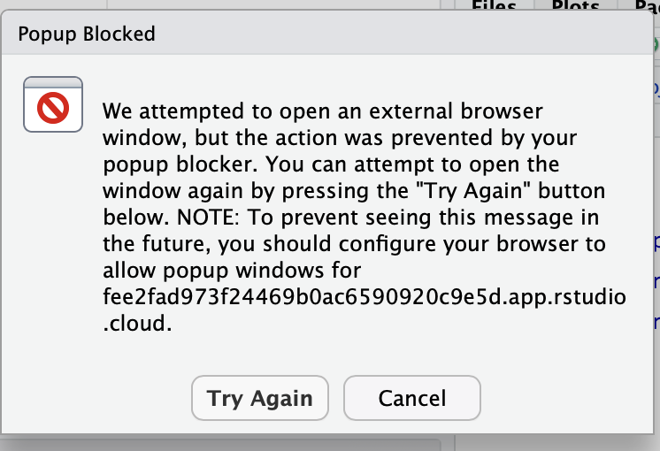
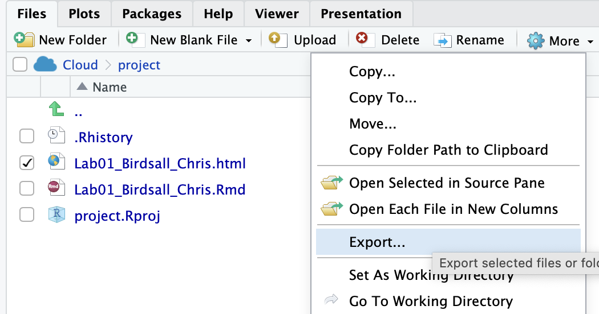

library(tidyverse)
library(datasauRus)Lab 01 - R & RStudio & Dinosaurs! Oh my!
Introduction
The main goal of this lab is to continue your introduction to R and RStudio by diving a little bit deeper into its functions and extensibility using packages. In this class, specifically, you’ll be using RStudio Cloud, which is identical to the desktop version except for the super convenient fact that you can access your R projects from any computer with internet access and a web browser.
R is the name of the programming language itself and RStudio is a convenient interface.
As the labs progress, you are encouraged to explore beyond what the labs dictate; a willingness to experiment will make you a much better programmer. Before we get to that stage, however, you need to build some basic fluency in R. Today we begin with the fundamental building blocks of R and RStudio: the interface, reading in data, and basic commands.
Getting started
Each lab will start with a “Getting started” section but details will be a bit more sparse than this. You can always refer back to this lab for a detailed list of the steps involved for getting started with an assignment.
Open the starter project in RStudio Cloud
Visit RStudio.cloud and login using the credentials you setup in our first class. Once you load up RStudio Cloud in your web browser you should see something like this:

In the left side bar you’ll see a header, “Space”, under which you’ll see “Your Workspace” and “SPS 502-F23”. Click SPS 502-F23 to view the list of projects associated with our class.
There you’ll see the Lab 01 starter project, called “Lab 01 - Hello R!”.
Click “Start” to begin the lab
The RStudio Interface
Once you start the lab you should see something similar to the following:

The panel on the left is where the action happens. It’s called the console. Every time you launch RStudio, it will have the same text at the top of the console telling you the version of R that you’re running.
The panel in the upper right contains your workspace. This shows the variables and objects you define during your R session, and a history of the commands that you enter.
Any plots that you generate will show up in the panel in the lower right corner. This is also where you can browse your files, access help files, and upload and download files.
In the files pane you’ll see the [project file](https://support.rstudio.com/hc/en-us/articles/200526207-Using-RStudio-Projects, an RMarkdown file named Lab01_Lastname_Firstname.Rmd. Click the checkbox next to the file then click “rename”, as shown below.

Replace “Lastname” and “Firstname” with your last name and first name and click okay.
Using R Markdown files
Opening the starter file
When you want to write a paper, you have to open a Word document to type your ideas into, and save your work in. In R we use a document type called an R Markdown document. R Markdown documents are useful for both running code, and annotating the code with comments. The document can be saved, so you can refer back to your code later, and can be used to create other document types (html, word, pdf, or slides) for presenting the results of your analyses. R Markdown provides a way to generate clear and reproducible statistical analyses.
Editing an R Markdown file
The top portion of your R Markdown file (between the three dashed lines) is called YAML. It stands for “YAML Ain’t Markup Language”. It is a human friendly data serialization standard for all programming languages. All you need to know is that this area is called the YAML it contains meta information about your document, such as the title of the document, the author name, and the date.
Let’s start by adding your first and last name in author field and adding the date. Be sure to keep the quotation marks.
Saving a file
You will complete your lab work in an R Markdown file like this each week, so it is important to learn how to save these files. It’s generally good practice to periodically save your work as you go.
Click File > Save
Okay, let’s get to the fun part!
The datasauRus Dozen
Loading Packages
In this lab we will use the tidyverse and datasauRus packages. We can load them using the following (this code is already provided for you in your starter document):
Data
The data frame we will be working with today is called datasaurus_dozen and it’s in the datasauRus package. Actually, this single data frame contains 13 datasets, designed to show us why data visualization is important and how summary statistics alone can be misleading. The different datasets are marked by the dataset variable.
To find out more about the dataset, type the following in your Console: ?datasaurus_dozen. A question mark before the name of an object will always bring up its help file. This command must be run in the Console.
- Based on the help file, how many rows and how many columns does the
datasaurus_dozenfile have? What are the variables included in the data frame? Add your responses to your lab report.
Let’s take a closer look at these datasets by making a frequency table of the dataset variable. Add the following code block to your R Markdown document and run it (copy the code then paste it under your answer in exercise 1):
datasaurus_dozen %>%
count(dataset) %>%
print(13)You should see a “tibble” pop up listing the names of the datasets in one column and the number of observations (n) in the next column.
Data Visualization and Summary
Okay, we’re about to do a lot of stuff that won’t make a ton of sense yet. We’ll go through a brief explanation in this lab, but more details and context for these commands will come in the next couple of weeks. For now, buckle up!
- Plot
yvs.xfor thedinodataset. Then, calculate the correlation coefficient betweenxandyfor this dataset. (Er… excuse me?)
Don’t worry. All the code you need to accomplish this is already in your lab for you. You’ll just need to include the code and some other information in your R Markdown file.
Start with the datasaurus_dozen and pipe it into the filter function to filter for observations where dataset == "dino". Store the resulting filtered data frame as a new data frame called dino_data.
dino_data <- datasaurus_dozen %>%
filter(dataset == "dino")There is a lot going on here, so let’s go through each part:
First, the pipe operator: %>%, takes what comes before it and sends it as the first argument to what comes after it. So here, we’re saying filter the datasaurus_dozen data frame for observations where dataset == "dino".
Second, the assignment operator: <-, assigns the name dino_data to the filtered data frame and stores it as an object in your environment (take a look at the environment pane in the top left corner).
Next, we need to visualize these data (yes, plural). We will use the ggplot function for this. The first argument specifies the data you’re visualizing. Next we define the aesthetic mappings (more on this next week). In other words, the columns of the data that get mapped to certain aesthetic features of the plot, e.g. the x axis will represent the variable called x and the y axis will represent the variable called y. Then, we add another layer to this plot where we define which geometric shapes we want to use to represent each observation in the data. In this case we want these to be points, hence geom_point.
ggplot(data = dino_data, mapping = aes(x = x, y = y)) +
geom_point()If this seems like a lot, it is. And you will learn about the philosophy of building data visualizations in detail next week. For now, just stick with it and follow along with the code . Again, I do not expect this to make much sense yet.
For the second part of this exercise, we need to calculate a summary statistic: the correlation coefficient. Correlation coefficients, often referred to as \(r\) in statistics, measure the linear association between two variables. You will see that some of the pairs of variables we plot do not have a linear relationship between them. This is exactly why we want to visualize first: visualize to assess the form of the relationship, and calculate \(r\) only if relevant. In this case, calculating a correlation coefficient really doesn’t make sense since the relationship between x and y is definitely not linear…. it’s shaped like a dinosaur!
But, for illustrative purposes, let’s calculate the correlation coefficient between x and y anyway.
Start with dino_data and calculate a summary statistic that we will call r as the correlation between x and y.
dino_data %>%
summarize(r = cor(x, y))Plot
yvs.xfor thestardataset. You can (and should) reuse code we introduced above, just replace the dataset name with the desired dataset. Then, calculate the correlation coefficient betweenxandyfor this dataset. How does this value compare to therofdino?Plot
yvs.xfor thecircledataset. You can (and should) reuse code we introduced above, just replace the dataset name with the desired dataset. Then, calculate the correlation coefficient betweenxandyfor this dataset. How does this value compare to therofdino?Finally, let’s plot all datasets at once. In order to do this we will make use of facetting.
ggplot(datasaurus_dozen, aes(x = x, y = y, color = dataset))+
geom_point()+
facet_wrap(~ dataset, ncol = 3) +
theme(legend.position = "none")Facet by the dataset variable, placing the plots in a 3 column grid, and don’t add a legend.
And we can use the group_by function to generate all the summary correlation coefficients.
datasaurus_dozen %>%
group_by(dataset) %>%
summarize(r = cor(x, y)) %>%
print(13)Wraping up
You’re done with the data analysis exercises, now it’s time to Knit!
Knitting an HTML file
Click the Knit button at the top left side of the screen to “knit” the file, or in other words, produce an output document. An .html file will be generated.
Note: If you see the popup below you can just hit cancel:

Then click on the html file in the “Files” pane to open it in your web browser:

Finishing touches
Almost done, but I’d like you to do two more things:
- Resize your figures:
Click on the gear icon in on top of the R Markdown document, and select “Output Options…” in the dropdown menu. In the pop up dialogue box go to the Figures tab and change the height and width of the figures, and hit OK when done. Then, knit your document and see how you like the new sizes. Change and knit again and again until you’re happy with the figure sizes. Note that these values get saved in the YAML.

You can also use different figure sizes for different figures. To do so click on the gear icon within the chunk where you want to make a change. Changing the figure sizes added new options to these chunks: fig.width and fig.height. You can change them by defining different values directly in your R Markdown document as well.

- Change the look of your report:
Once again click on the gear icon in on top of the R Markdown document, and select “Output Options…” in the dropdown menu. In the General tab of the pop up dialogue box try out different Syntax highlighting and theme options. Hit OK and knit your document to see how it looks. Play around with these until you’re happy with the look.

Submission
Finally, you need to save your html file and submit it to me on Canvas. Here’s how to do it (see image below for reference):

- First, click the checkbox next to the html file in your files pane.
- Next, click “More” and select “Export”
- Save the html file somewhere on your computer where you can find it (e.g., downloads folder, documents folder, desktop, or a folder you created for the class).
- Go to our class page on canvas and click on “assignments”. Navigate to “Lab 01” under “Labs” and submit just as you would a paper in any other class.
And you’re done!